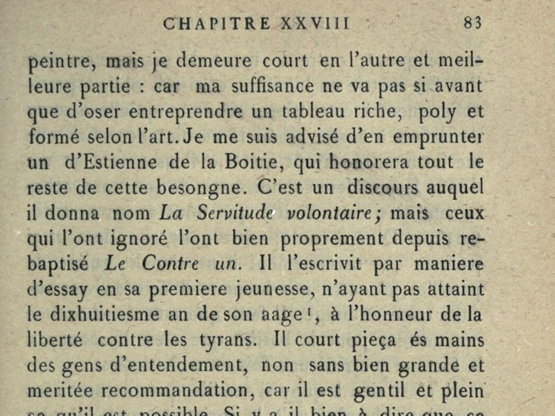

The reversals of religious argument (II.12, p. 179)
French: p. 179, scan. The passage continues in smaller type at the foot of the page; I have not determined why (the edition’s apparatus is not described in the pages I read). Highlighted: Lecky’s quotation.
See the horrible impudence with which we toss about divine reasons, and how irreligiously we have both rejected them and taken them up again, as fortune has changed our place in these public storms. That proposition so solemn: “Whether it is permitted to a subject to rebel and take up arms against his prince for the defence of religion”: remember in whose mouths, this past year, the affirmative of it was the buttress of one party; the negative, of what other party it was the buttress; and hear now from what quarter comes the voice and teaching of the one and of the other; and whether arms clash less for this cause than for that. And we burn the people who say that truth must be made to suffer the yoke of our need; and how much worse France does than to say it!
Original French
Voyez l’horrible impudence dequoy nous pelotons les raisons divines et combien irreligieusement nous les avons et rejettées et reprises selon que la fortune nous a changé de place en ces orages publics. Cette proposition si solenne : « S’il est permis au subject de se rebeller et armer contre son prince pour la defense de la religion », souvienne vous en quelles bouches, cette année passée, l’affirmative d’icelle estoit l’arc-boutant d’un parti ; la negative, de quel autre parti c’estoit l’arc-boutant ; et oyez à present de quel quartier vient la voix et instruction de l’une et de l’autre ; et si les armes bruyent moins pour cette cause que pour celle là. Et nous bruslons les gents qui disent qu’il faut faire souffrir à la verité le joug de nostre besoing ; et de combien faict la France pis que de le dire !
| Lecky, 1865 | Courbet–Royer, 1900 | |
|---|---|---|
| “horrible …” | l’horrible imprudence de quoi | l’horrible impudence dequoy |
| “and … and” | nous les avons rejettées et reprises | nous les avons et rejettées et reprises |
| Spelling | modernised throughout (sujet, solennelle) | sixteenth-century (subject, solenne) |
| End | …que pour celle-là. | …que pour celle là. Et nous bruslons les gents… |
I cannot say whether “imprudence” is Lecky’s slip or the reading of the edition he used: it is not the reading here. Lecky stops at “celle-là” and omits the next sentence about burning those who say that truth must bear the yoke of our need, which is the sharper part.
Editor’s notes on this page
Lecky quotes Montaigne’s outcry at how the question “may a subject rebel against his prince for religion?” was answered by each party according to its fortunes. The passage is Montaigne’s, in the long chapter known as the Apologie de Raimond Sebond. Lecky’s French is slightly modernised and differs in one word, imprudence for impudence, and one repeated et.
La Boétie’s Servitude volontaire, “rebaptized” Le Contre un (Book I, “De l’amitié”, p. 83)
French: Courbet–Royer, vol. 2, Book I ch. XXVIII, p. 83, scan n96. Many editions number this essay I.27, as Lecky does. Spelling as printed. Highlighted: the renaming Lecky reports.

… I have thought of borrowing one from Étienne de La Boétie, which will do honour to all the rest of this work. It is a discourse to which he gave the name Voluntary Servitude; but those who did not know this have since very aptly rebaptized it Against One. He wrote it by way of an essay in his early youth, before he had reached his eighteenth year, in honour of liberty against tyrants. It has long passed through the hands of men of understanding, not without very great and well-deserved commendation, for it is as graceful and full as can be.
Translation: this edition’s draft.
Original French
… Je me suis advisé d’en emprunter un d’Estienne de la Boitie, qui honorera tout le reste de cette besongne. C’est un discours auquel il donna nom La Servitude volontaire; mais ceux qui l’ont ignoré l’ont bien proprement depuis rebaptisé Le Contre un. Il l’escrivit par maniere d’essay en sa premiere jeunesse, n’ayant pas attaint le dixhuitiesme an de son aage, à l’honneur de la liberté contre les tyrans. Il court pieça és mains des gens d’entendement, non sans bien grande et meritée recommandation, car il est gentil et plein ce qu’il est possible.
Lecky (vol. II, ch. V, note 124), on the name Contr’un: “The name was given during the life of Montaigne, who praised it.” Montaigne both reports the new name, approvingly (“bien proprement”), and praises the discourse. He also says La Boétie wrote it before he was eighteen; Lecky’s text adds that La Boétie died “when only in his thirty-second year”, which is not on this page.
Further down the rabbit hole
Sources that Lecky cites in the notes next to the ones that cite this page.
- Vindiciae contra tyrannosElijah’s massacre of the priests of Baal as a precedent for lawful rebellion
- Cibrario, Della economia politica del medio evoTurin, 1388: a heretic who held that the Devil made Adam and Eve, and that usury was no sin
- Hobbes, Leviathan (Latin version), chapter 29Hobbes says classics teach rebellion in monarchies
- Froude, The Nemesis of FaithThe deeper men feel sin, the nearer they drift to Rome: a novel that was burned at Oxford
- Chevalier, Lettres sur l’organisation du travailIf the shuttle could weave by itself, there would be no need of slaves: an economist answers the socialists of 1848
- An Homily against Disobedience and Wilful RebellionHell as the prison of rebels: the Church of England preaches obedience


Backlinks
Every place in Rationalism in Europe that links to this page (generated automatically when the site is built).